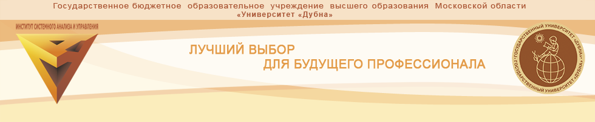
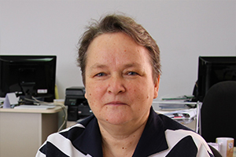

Об институте
Образование, исследования и практика в области информационных технологий.
На сайт института
Университет «Дубна»
Здесь учатся понимать сложные системы и создавать технологии, которые меняют повседневную жизнь.
Образование, исследования и практика в области информационных технологий.
На сайт института
Математические модели и методы для решения сложных прикладных задач.
На сайт института
Высокопроизводительные вычисления и распределённая обработка данных.
На сайт института
Разработка программных решений и автоматизация управления.
На сайт института
Современные программные платформы, данные и цифровые сервисы.
На сайт института
Пространственные данные и инструменты их анализа.
На сайт института
Цифровая трансформация организаций и управление проектами.
На сайт института